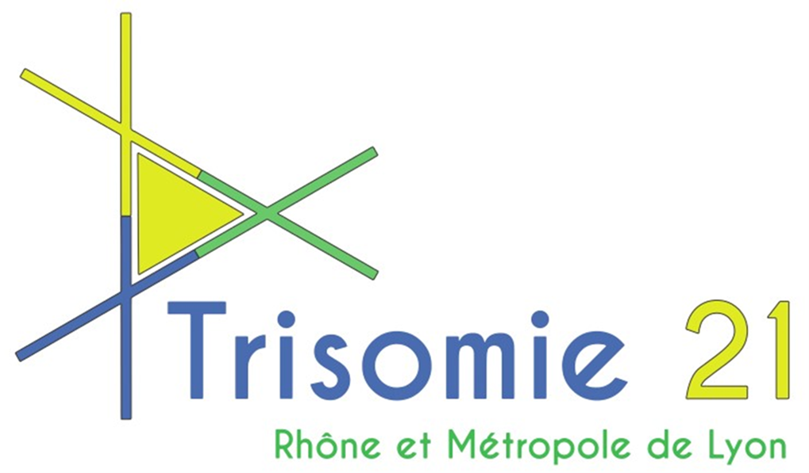

Stages
Projet
Ce projet consistera à développer une application mobile sous Android et iOS.
Cette application a pour but d’aider les personnes atteintes de l’anomalie génétique qu’est la trisomie21 , l’ensemble des personnes porteuses d’un handicap intellectuel et aussi les personnes âgées dans la vie de tous les jours.
Cette application a une portée nationale. Ça sera la première application du marché avec ce concept. Elle permettra d’accompagner et d’aider les porteurs de trisomie ou autres déficiences dans les actes du quotidien.
Toute la partie rédactionnelle sera en police Tahoma pour une taille de 14 et respectera les recommandations du FALC (Facile A Lire et à Comprendre). Cette application se conformera à la norme RGAA de niveau 2
Stage 1ère année BTS
Ce stage de première année ce résume à réaliser le cahier des charges que je suivrai lors de la suite du stage en deuxième année afin de créer l'application.
J’ai donc pu avoir des échanges avec eux afin de comprendre leur attente pour cette application pour ensuite pouvoir établir le cahier des charges que je suivrai par la suite pour mener à bien mon projet.
Ce stage n’est pas comme les autres car nous avons des personnes derrière nous qui attendent un résultat afin de pouvoir les aider dans leurs vies de tous les jours, j’ai donc une responsabilité conséquente.
Par la réalisation de ce cahier des charges, voici les fonctionnalités de l'application que j'ai pu retenir.
Fonctionnalités de l'application
- Un système de pointage
- Un GPS
- Des alertes
- Transports en commun, mobilités
- Un calendrier
- Un Tutoriel de l'application
- Elocution
- Liste de courses
- Identification
- Recettes
- Un traducteur
- Lire des documents
- Gérer son argent personnel
- Communication
- Une rubrique qui explique l'anomalie génétique
- Un système pour trouver une place de parking
Stage 2ème année BTS
Lors de la 2ème partie du stage en deuxième année, je devais réaliser l'application en suivant le cahier des charges.
Lors de ce début de stage, j'ai commencé par réaliser plusieurs recherches et formations.
Tout d’abord, j'ai effectué des recherches afin de choisir le FrameWork qui nous a permis de réaliser et suivre au mieux le cahier des charges.
J'ai fini par choisir React Native qui est le framework le plus complet par rapport à nos besoins.
React Native est un framework d'applications mobiles open source créé par Facebook.
Il est utilisé pour développer des applications pour Android, iOS et UWP en permettant aux développeurs d’utiliser React avec les fonctionnalités natives de ces plateformes.
Il fonctionne avec le langage de programmation JavaScript.
J'ai également utilisé Expo qui est à la fois un framework et une plateforme qui simplifient la création et le déploiement d'applications mobiles avec React Native. Expo embarque de nombreux outils utiles et des librairies natives pour React Native.
Expo m'a permis de tester l’application sur téléphone par le biais d’une application qui est disponible gratuitement en téléchargement sur les stores des téléphones mobiles (android, IOS).
Enfin nous avons suivi deux formations sur OpenClassroom :
(https://openclassrooms.com/fr/courses/7008001-debutez-avec-react
)
(https://openclassrooms.com/fr/courses/7150606-creez-une-application-react-complete)
La fonctionnalité contact a été opérationnel lors de la livraison.
Cette fonctionnalité a pour but de crée un contact, enregistrez ce contact, modifier les contacts et appeler les contacts.
J'ai utilisé une base de données local : SQLite.
Pour réaliser cette application et fonctionnalité je me suis aidé de YouTube, google, snack qui est un outil d’exercices proposer par expo, GitHub.
Certaines documentations ont été utile d’autre moins.
J'ai rendu plus accessible la fonctionnalité contact par rapport la fonctionnalité contact basique déjà présente sur les téléphones mobiles.
Des buttons visibles, simples et compréhensibles.
